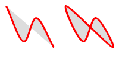

g2.ext.js #
g2 extension for expanded functionality #
g2.ext adds so functions which can be invoked on existing g2 elements, which is used in extensions like label and mark, aswell as in other extensions like g2.mec.js.
get length of line in label #
g2().view({cartesian:true})
.lin({x1:10,y1:10,x2:90,y2:90,ld:[6,3]})
.label({str:"@len",off:20})

How label works is shown further down on this page.
Splines #
g2.ext.js introduces a new method which draws splines by points by implementing a centripetal Catmull-Rom spline (thus avoiding cusps and self-intersections).
The spline command expects an object with a pts property analogous to the
ply method from g2.js.
This property can have different formats, for each of which there must be provided an individual
array iterator. g2 implements three standard iterators which need not be specified by last itr argument.
| Property Format | comment |
|---|---|
{pts:[x1,y1,x2,y2,...,xn,yn]} |
Flat array of x and y values [default]. |
{pts:[[x1,y1],[x2,y2],...,[xn,yn]]} |
Array of arrays of x and y values. |
{pts:[{x:x1,y:y1},{x:x2,y:y2},...,{x:xn,y:yn}]} |
Array of objects with x and y members. |
Another property of string is closed which can have boolean values true and false, which are interpreted as closed flags (also analogous to ply).
g2().style({ls:"red",lw:3,fs:"#ddd"})
.spline([10,10,40,70,60,30,90,80])
.spline([[110,10],[140,70],[160,30],[190,80]],true)
.spline([{x:210,y:10},{x:240,y:70},{x:260,y:30},{x:290,y:80}],'split');

Other ressources on splines:
Labels #
If you want to add text to a geometric element, you can always use the basic txt element. However some
element types support the smarter label element, which comes with a more intuitive relative positioning with respect
to its nearest previous element. Reliable positioning requires always cartesian coordinates.
| Element | Meaning |
|---|---|
label({str,loc,off}) |
Label element placing string str at location loc using offset off. |
Point like and rectangular elements provide locations according cardinal directions. Linear elements provide parameterized numerical or named locations.
| Type | Elements | default | locations | offset | img |
|---|---|---|---|---|---|
| Point elements | cir, use |
c |
ce,ne,n,nw,w,sw,s,seangle in [radians] |
number |  |
| Rectangular elements | rec, slider |
c |
ce,ne,n,nw,w,sw,s,se |
number |  |
| Linear elements | lin, vec, dimarc, adimspring, damperbar, bar2 |
0.5 |
beg, mid, endnormalized numerical parameter |
left, rightnumber |
 |
| Polygonial elements | ply, groundlink, link2 |
0.5 |
beg, end#index normalized numerical parameter |
left, rightnumber |
 |
| Spline element | spline |
beg |
beg, end#index |
left, rightnumber |
 |
A numerical offset always means outside of closed shapes with regard to the specified point.
With linear, polygonial and spline elements a positive value means right of and a negativ value means left of
the line at the specified point. If there is no offset distance specified, the global g2.State.labelOffset's value is taken. Please note, that cardinal locations are not sensitive to transformations.
Markers #
Markers can be placed onto the outline of the previous element.
| Element | Meaning |
|---|---|
mark({mrk,loc}) |
Marker element placing marker symbol mrk at locations loc. |
Elements with a unique center and rectangular elements provide locations according cardinal directions.
Linear elements provide parameterized numerical or named locations. The spline element only support indexed locations. It does not support parameterized locations.
Locations can also be passed as arrays, which makes it convenient for multiple marks with same mrk to be just passed in one calling of the mark method e.g mark({mrk:"tick",loc:[0,0.25,"mid",0.9]})
| Type | Elements | default | locations | dir | img |
|---|---|---|---|---|---|
| Centered elements | cir |
c |
ce,ne,n,nw,w,sw,s,senormalized parameter |
-1,0,1 |
 |
| Rectangular elements | rec, slider |
c |
ce,ne,n,nw,w,sw,s,se |
-1,0,1 |
|
| Linear elements | lin, vec, dimarc, avec, adimspring, damperbar, bar2 |
0.5 |
beg, mid, endnormalized numerical parameter |
-1,0,1 |
 |
| Polygonial elements | ply, groundlink, link2 |
0.5 |
beg, end, mid, all#index normalized numerical parameter |
-1,0,1 |
 |
| Spline element | spline |
beg |
beg, end, mid, all#index |
-1,0,1 |
 |